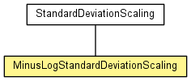

de.lmu.ifi.dbs.elki.utilities.scaling.outlier
Class MinusLogStandardDeviationScaling
java.lang.Object
 de.lmu.ifi.dbs.elki.utilities.scaling.outlier.StandardDeviationScaling
de.lmu.ifi.dbs.elki.utilities.scaling.outlier.MinusLogStandardDeviationScaling
de.lmu.ifi.dbs.elki.utilities.scaling.outlier.StandardDeviationScaling
de.lmu.ifi.dbs.elki.utilities.scaling.outlier.MinusLogStandardDeviationScaling
- All Implemented Interfaces:
- InspectionUtilFrequentlyScanned, Parameterizable, OutlierScalingFunction, ScalingFunction
@Reference(authors="H.-P. Kriegel, P. Kr\u00f6ger, E. Schubert, A. Zimek",
title="Interpreting and Unifying Outlier Scores",
booktitle="Proc. 11th SIAM International Conference on Data Mining (SDM), Mesa, AZ, 2011",
url="http://www.dbs.ifi.lmu.de/~zimek/publications/SDM2011/SDM11-outlier-preprint.pdf")
public class MinusLogStandardDeviationScaling- extends StandardDeviationScaling

Scaling that can map arbitrary values to a probability in the range of [0:1].
Transformation is done using the formula max(0, erf(lambda * (x - mean) /
(stddev * sqrt(2))))
Where mean can be fixed to a given value, and stddev is then computed against
this mean.
|
Method Summary |
double |
getScaled(double value)
Transform a given value using the scaling function. |
void |
prepare(OutlierResult or)
Prepare is called once for each data set, before getScaled() will be
called. |
| Methods inherited from class java.lang.Object |
clone, equals, finalize, getClass, hashCode, notify, notifyAll, toString, wait, wait, wait |
MinusLogStandardDeviationScaling
public MinusLogStandardDeviationScaling(Double fixedmean,
Double lambda)
- Constructor.
- Parameters:
fixedmean - lambda -
getScaled
public double getScaled(double value)
- Description copied from interface:
ScalingFunction
- Transform a given value using the scaling function.
- Specified by:
getScaled in interface ScalingFunction- Overrides:
getScaled in class StandardDeviationScaling
- Parameters:
value - Original value
- Returns:
- Scaled value
prepare
public void prepare(OutlierResult or)
- Description copied from interface:
OutlierScalingFunction
- Prepare is called once for each data set, before getScaled() will be
called. This function can be used to extract global parameters such as
means, minimums or maximums from the Database, Result or Annotation.
- Specified by:
prepare in interface OutlierScalingFunction- Overrides:
prepare in class StandardDeviationScaling
- Parameters:
or - Outlier result to use